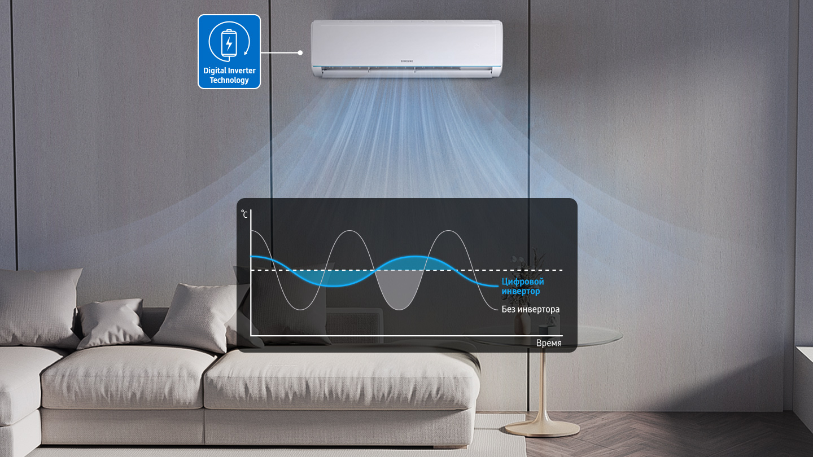
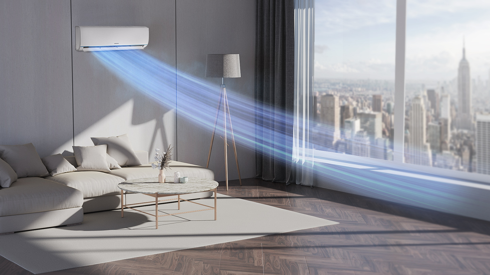
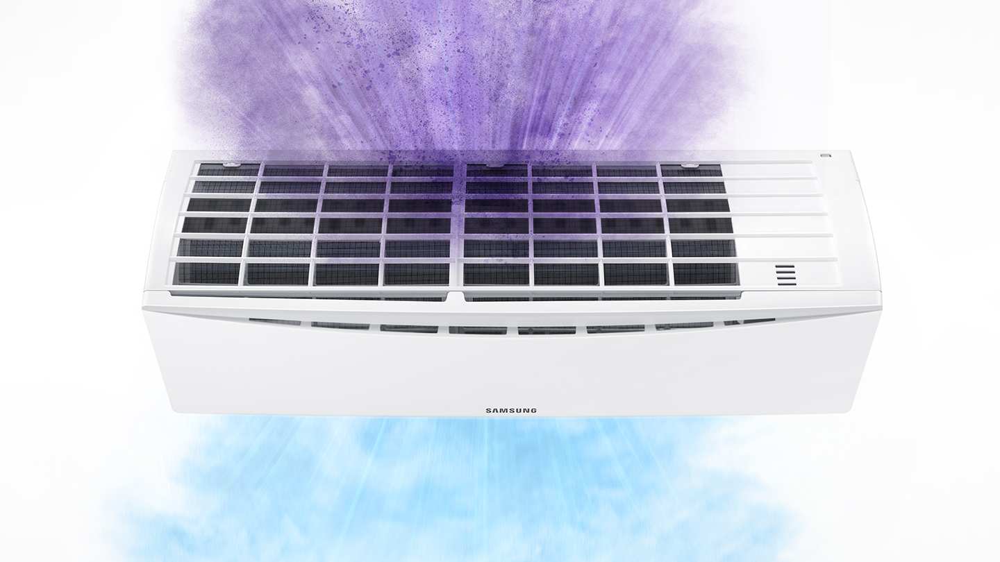
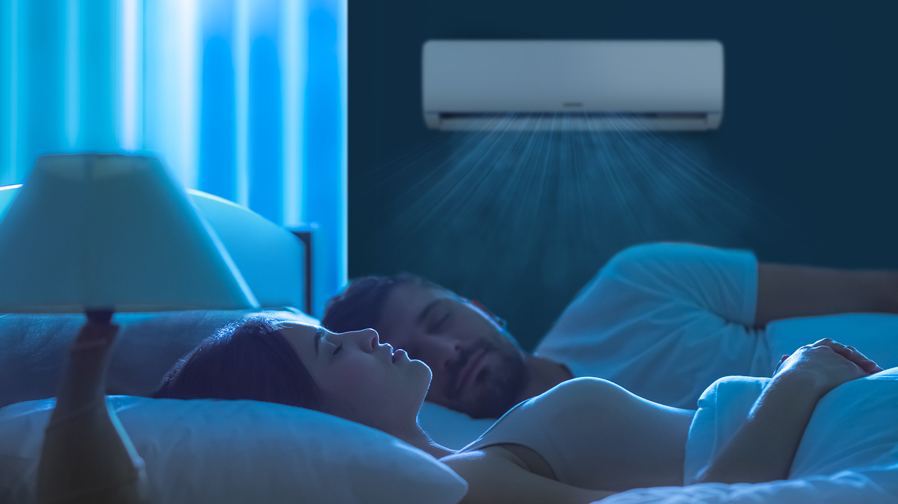
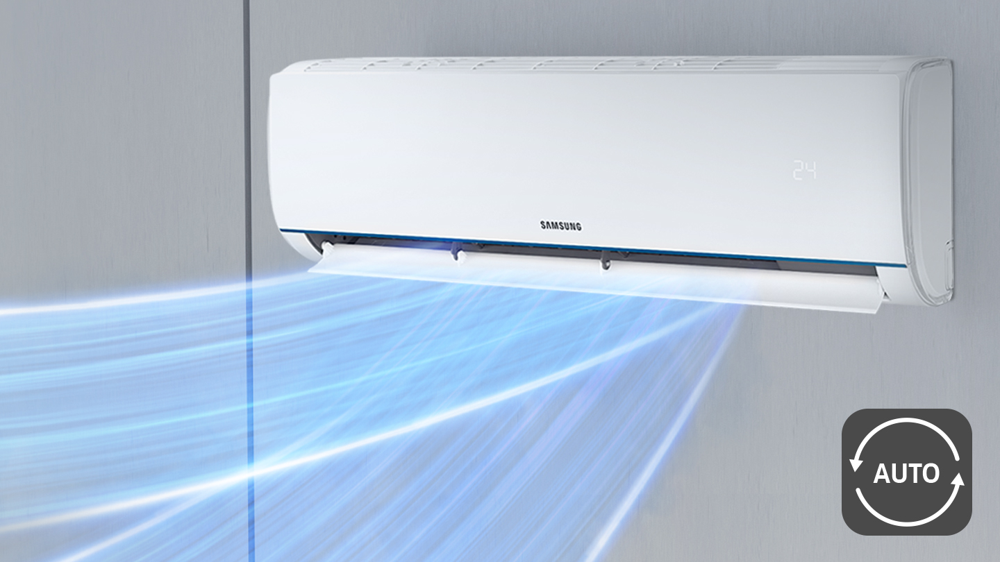
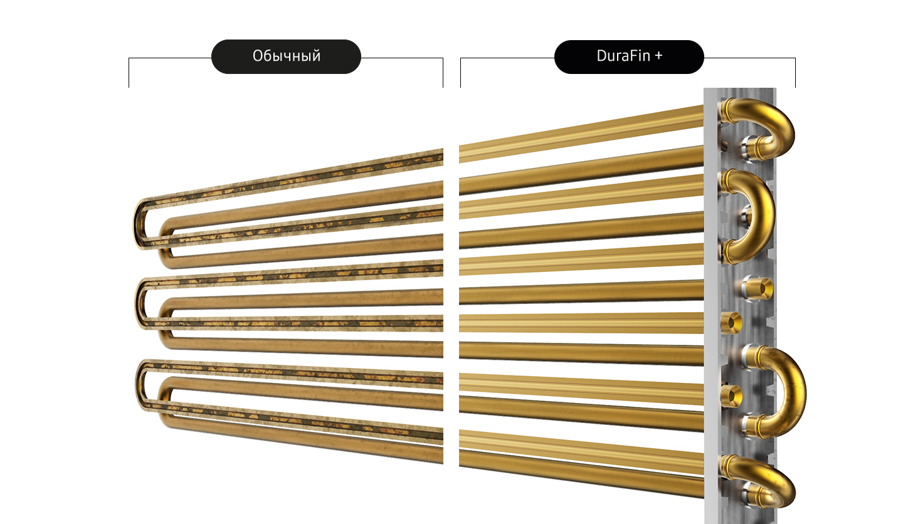

Consum redus energie și zgomot
Compresorul invertor are un nivel ridicat de eficiență în toate domeniile de funcționare. Menține temperatura selectată fără a necesita pornirea sau oprirea frecventă. Datorită acestui fapt, aparatul de aer condiționat folosește cu 73% mai puțină energie electrică, iar magneții din neodim asigură că modelele sunt mai silențioase și mai fiabile.

Proiectat pentru o răcire eficientă
Mod de răcire rapidă
În modul de scădere rapidă a temperaturii, aparatul de aer condiționat este capabil să răcească fluxurile de aer într-o perioadă scurtă de timp. Acest lucru a devenit posibil datorită funcționării accelerate a compresorului cu 43% și a celei mai puternice ventilații. Designul inteligent permite utilizarea ventilatoarelor cu 15% mai mari, conducta este cu 18% mai spațioasă și cu 31% mai lată decât lama. Toate acestea contribuie la o distribuție a aerului mai uniformă și mai îndepărtată

Filtru HD - Doar aer curat
Fii sigur că aerul pe care îl respiri este curat. Cu filtrul HD, aparatul de aer condiționat captează în mod eficient praful, alergenii, polenul de mucegai, parul pentru animale de companie și alte particule de murdărie. Pentru a-l menține curat, filtrul poate fi pur și simplu spălat și refolosit.

Mod somn confortabil
În modul confort somn, aparatul de aer condiționat creează atmosfera optimă pentru relaxare. Sistemul automat de control al temperaturii controlează clima din cameră. Acest lucru vă va ajuta să dormiți profund și eficient și să vă treziți revigorat și energizat.

Răcire bidirecțională
Răcire în fiecare colț
Bucură-te de o atmosferă confortabilă în casa ta. Aerul condiționat acceptă funcția de rotire automată în două direcții, astfel încât controlează direcția fluxului de aer. Pentru a menține temperatura optimă, dispozitivul generează curenți reci sau calzi în direcții diferite, distribuind uniform și rapid aerul prin cameră.

Acoperire anticorozivă DuraFin ™ pentru
performanțe lungi și stabile
Majoritatea componentelor aparatului de aer condiționat sunt acoperite cu stratul anticoroziv unic DuraFin ™, astfel încât unitatea va rezista mai mult. Acoperirea DuraFin ™ protejează eficient compresorul de rugină și creează condițiile pentru performanțe ridicate. Materialul a trecut cu succes Testul de sare (SST) timp de 480 de ore.
